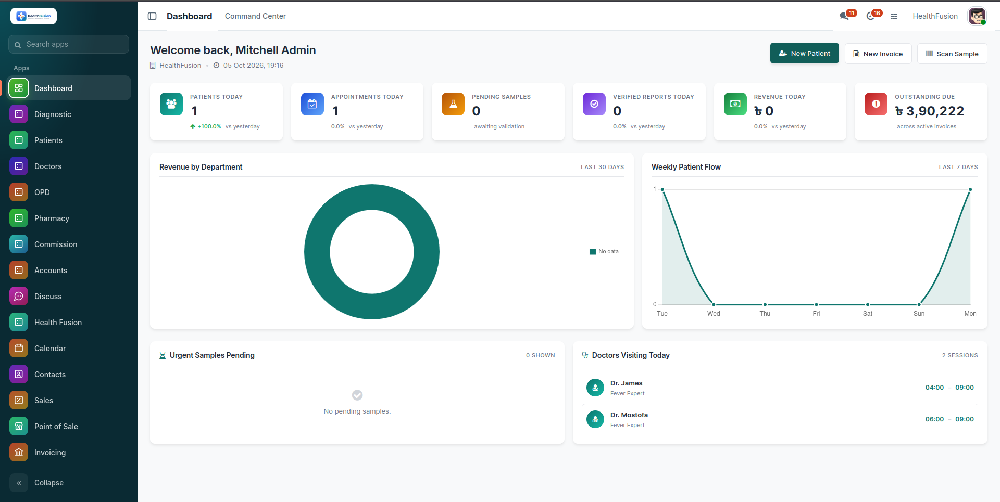
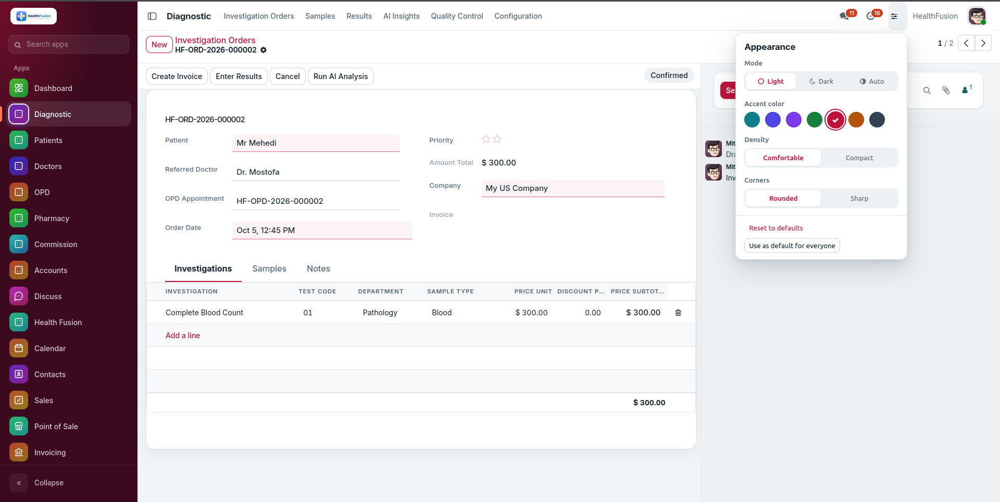
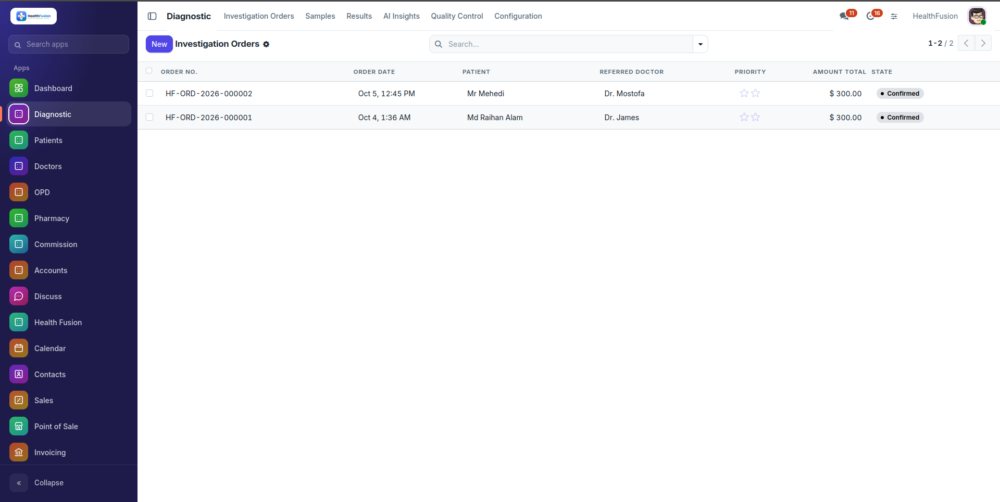
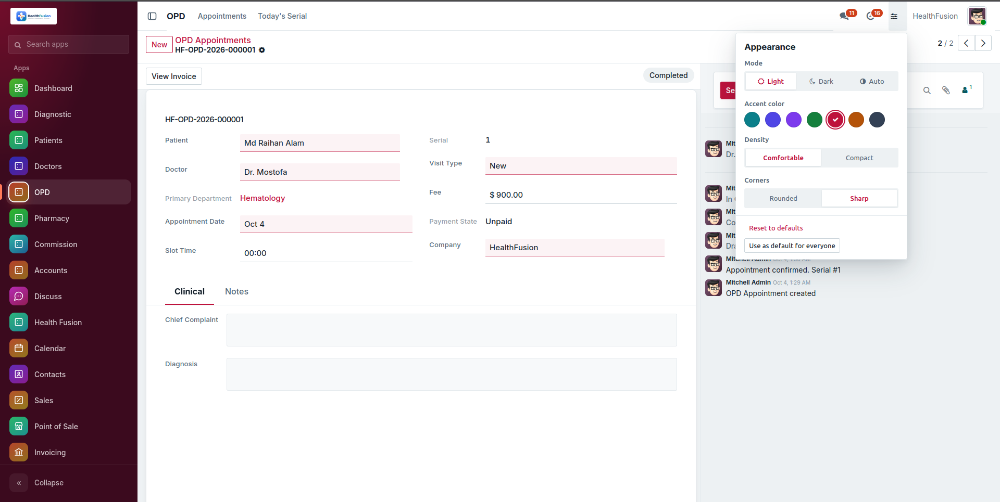
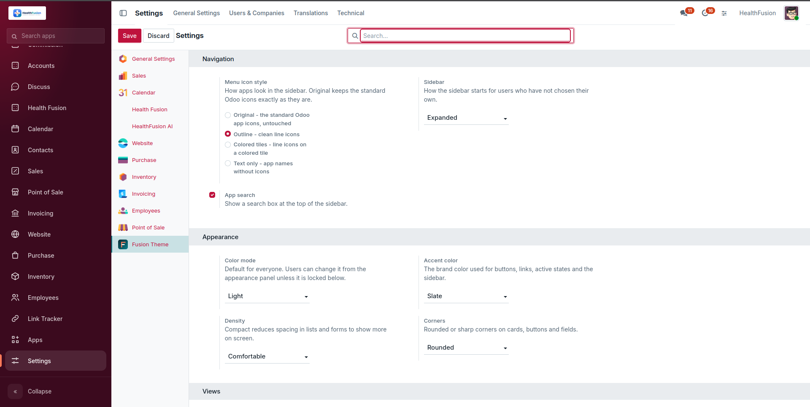

A modern, interactive backend theme for Odoo 19 by Raihan Hridoy.
Collapsible rail with search, pinned apps and keyboard navigation. The active app is lit; everything else stays quiet.

A stage stepper shows completed, current and upcoming stages. Editable records get an accent edge; required, invalid and focused fields have clear states.

Calm headers, hover and selection states with an accent bar, inline-edit highlight, grouped rows and compact density.

Open the appearance panel in the top bar: light, dark or auto mode, seven accent colors, density and corner style. Administrators can set company defaults.

